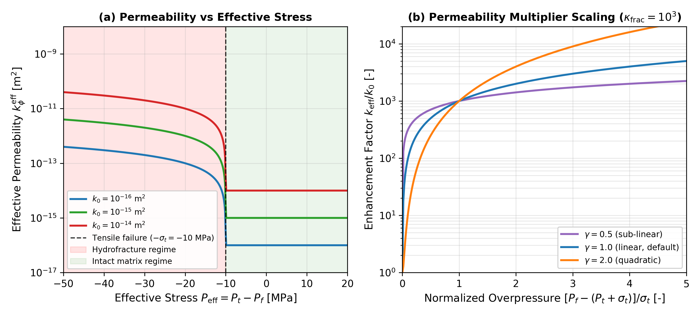

Permeability and Hydrofracture Validation
This module validates the porosity-dependent matrix permeability and the effective stress-dependent hydrofracturing enhancement.
1. Kozeny-Carman Porosity-Permeability Relation
Governing Formulation
Pore fluid percolation through the solid planetesimal matrix follows Darcy's law with permeability $k(\phi)$ governed by the Kozeny-Carman relationship:
\[k(\phi) = k_{\phi 0} \left(\frac{\phi}{\phi_0}\right)^3 \left(\frac{1 - \phi_0}{1 - \phi}\right)^2\]
where $k_{\phi 0}$ is reference permeability at reference porosity $\phi_0$.
Literature Anchors
- Carman, P. C. (1937). Fluid flow through granular beds. Transactions of the Institution of Chemical Engineers, 15, 150-166. https://doi.org/10.1016/S0263-8762(97)80003-2
- Hubmann, B. (2022). Hydrology of Planetesimals. Master's thesis, ETH Zurich. https://doi.org/10.5281/zenodo.7058229 (Equation 2.11)
- Gerya, T. (2019). Introduction to Numerical Geodynamic Modelling (2nd ed.). Cambridge University Press. https://doi.org/10.1017/9781316534243
Invariants and Limits
- Zero Porosity Limit: As $\phi \to 0$, $k(\phi) \to 0$ (impermeable solid).
- Reference Consistency: At $\phi = \phi_0$, $k(\phi_0) = k_{\phi 0}$.
- Monotonicity: Permeability is strictly monotonically increasing with porosity $\phi$ for all $\phi \in (0, 1)$.
- Error Contract: Passing $\phi < 0$ or $\phi \ge 1$ throws
DomainError.
Verification Test Suite
test/test_physics.jl:@testset "kphi(): Kozeny-Carman permeability invariants"
2. Terzaghi Effective Overpressure and Hydrofracturing
Governing Formulation
When pore fluid pressure exceeds total confining pressure plus rock tensile strength, dynamic hydrofracturing enhances Darcy permeability:
\[P_{\text{eff}} = P_t - P_f \le -\sigma_t\]
The effective permeability scaling is parameterized as:
\[k_\phi^{\text{eff}} = \min\left(k_\phi \cdot \left[1 + \kappa_{\text{frac}} \left(\frac{\max(0, -P_{\text{eff}} - \sigma_t)}{\sigma_t}\right)^\gamma\right], k_{\text{max}}\right)\]
Literature Anchors
- Terzaghi, K. (1925). Erdbaumechanik auf bodenphysikalischer Grundlage. Franz Deuticke, Leipzig.
- Wang, H. F. (2000). Theory of Linear Poroelasticity with Applications to Geomechanics and Hydrogeology. Princeton University Press.
Invariants and Limits
- No Overpressure: When $P_{\text{eff}} > -\sigma_t$, $k_\phi^{\text{eff}} = k_\phi$.
- Strict Upper Bound: $k_\phi^{\text{eff}} \le k_{\text{max}}$ under arbitrarily high fluid overpressure.
- Monotonic Enhancement: $k_\phi^{\text{eff}}$ increases monotonically with normalized overpressure for all positive scaling exponents $\gamma > 0$.
Parameterization Behavior

Figure 1: Verification of dynamic hydrofracturing permeability enhancement in Erebus. (a) Effective permeability $k_\phi^{\text{eff}}$ as a function of Terzaghi effective stress $P_{\text{eff}} = P_t - P_f$ for compressive ($P_{\text{eff}} > 0$), intact tensile ($-\sigma_t < P_{\text{eff}} \le 0$), and hydrofractured ($P_{\text{eff}} \le -\sigma_t$) regimes for representative matrix permeabilities ($k_0 \in [10^{-16}, 10^{-14}]\text{ m}^2$) at tensile strength $\sigma_t = 10\text{ MPa}$. (b) Permeability enhancement factor $k_{\text{eff}} / k_0$ as a function of normalized overpressure for scaling exponents $\gamma \in \{0.5, 1.0, 2.0\}$ at $\kappa_{\text{frac}} = 10^3$.
Verification Test Suite
test/test_physics.jl: Hydrofracturing permeability boundstest/test_numerics.jl: Stokes-Darcy coupled fluid-matrix pressure solve
3. Poroelastic Constitutive Limits
In src/physics.jl, the constitutive poroelastic functions are verified against physical asymptotic limits:
Incompressible Solid Skeleton ($\beta_s \to 0$): $\lim_{\beta_s \to 0} K_{\text{BW}} = 1, \quad \lim_{\beta_s \to 0} B = \frac{\beta_\phi}{\beta_\phi + \phi(1 - \phi)\beta_f}$ Verified over porosity values $\phi \in [\phi_{\text{min}}, \phi_{\text{max}}]$.
Incompressible Pore Fluid ($\beta_f \to 0$): As fluid compressibility approaches zero, Skempton coefficient $B$ approaches its undrained upper bound: $\lim_{\beta_f \to 0} B = \min\left(1, \frac{\beta_d - \beta_s}{\beta_d - (1 + \phi)\beta_s}\right) = 1$ where the code clamps the theoretical ratio to $[0, 1]$ to enforce the physical upper bound.
Porosity Bounding Guarantees: Constitutive routines clamp porosity to $[\phi_{\text{min}}, \phi_{\text{max}}]$ to prevent singular division when $\phi \to 0$ or $\phi \to 1$.
Parameterization Behavior

Figure 2: Theoretical behavior of derived poroelastic coefficients in Erebus. (a) Biot-Willis coefficient $K_{\text{BW}}$ as a function of porosity $\phi$ for varied solid grain compressibility $\beta_s$ to confirm asymptotic convergence toward unity ($K_{\text{BW}} \equiv 1$) in the incompressible solid grain limit. (b) Skempton pore pressure coefficient $B$ as a function of fluid compressibility $\beta_f$ for representative porosity values to display undrained response transitions.
Verification Test Suite
test/test_physics.jl: Poroelastic constitutive functions and asymptotic limits